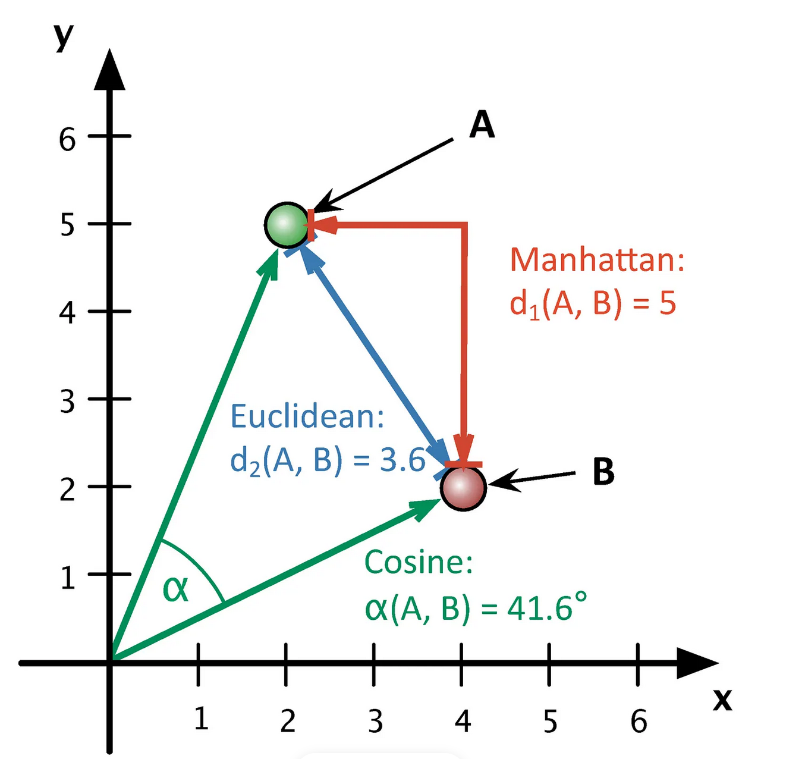
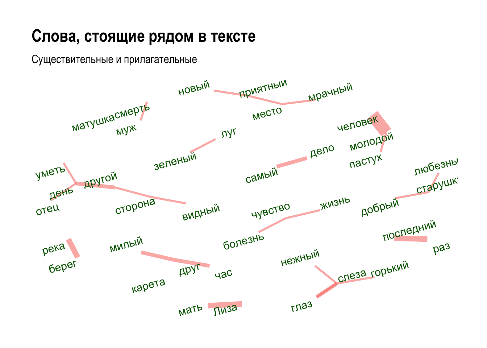
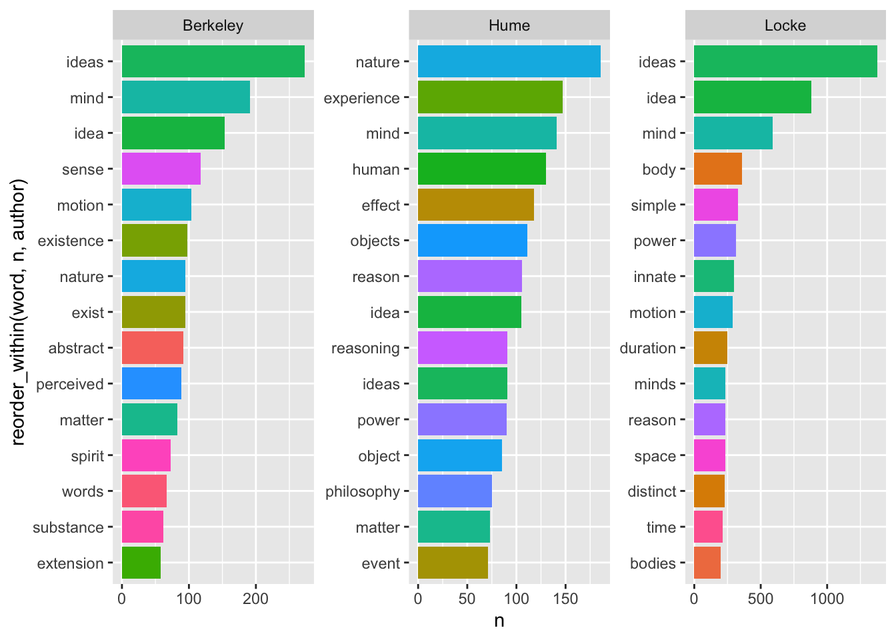

Тема 14 Латентно-семантический анализ (Часть 1)
14.1 Что это такое
В этом уроке речь пойдет о таком методе тематического моделирования, как латентно-семантический анализ, или LSA (в области информационного поиска называемый также LSI, Latent Semantic Indexing). Как и LDA, это метод метод обработки информации на естественном языке, который позволяет находить взаимосвязь между коллекцией документов и встречающимися в них терминами за счет сопоставления этих документов и терминов с некоторыми темами.
Слово “скрытый” в названии указывает на то, что семантические взаимосвязи между документами и терминами, как правило, заранее не известны. В исходной термдокументной матрице, которую мы передаем алгоритму, не видно закономерностей. Как раз задача аналитика – их обнаружить, сгруппировав по темам, с одной стороны, термины, а с другой – документы.
Создатели метода называют LSA “теорией смысла” и видят в нем ответ на вопрос о том, как носители языка приходят к пониманию смысла. Как вообще машина может обнаружить “близкие” слова и документы? В 1957 британский лингвист Джон Руперт Фёрс сформулировал это так: you shall know a word by the company it keeps. Томас Ландауер, один из создателей LSA, обобщает этот подход в статье “LSA as a theory of meaning”: синтаксические связи переоценены, и смысл параграфов и целых текстов – это лишь функция от смысла отдельных слов. Смысл – это не статическая константа, а динамическое отношение, или система отношений. На уровне реализации действительно LSA показал способность справляться с задачами, которые до середины 90-х считались прерогативой живого человека. Например, с проблемами полисемии и синонимии.

14.2 Векторное представление слов
Мы можем представить термин в виде вектора, который хранит информацию о его встречаемости в документах. Каждый элемент вектора будет координатой в многомерном пространстве. В англоязычной литературе векторные представления называют эмбеддингами (embedding, т.е. «вложение»). Представляя объект в виде вектора, мы как бы «вкладываем» его в векторное пространство, где действуют геометрические законы.
Дальше дело за вычислением расстояния (или сходства) между векторами – это уже задача из области линейной алгебры. Как правило, в алгоритме LSA используется косинусное сходство (о том, что это такое, см. видео: часть 1 и часть 2).

Трудность в том, что даже для небольших коллекций документов термдокументная матрица является очень разреженной (даже в небольшом примере из предыдущего урока разреженность составляла почти 100%). Чем больше ваш корпус, тем более разреженной будет матрица: это естественно, поскольку в каждом документе встречается лишь небольшая часть всех слов.
Любые действия над такими матрицами требуют больших вычислительных затрат, при этом результат не обязательно будет точным из-за синонимии и полисемии: слово apple можно встретить как в плодово-овощной рубрике, так и в заметке об IT. Справиться с этим помогает метод LSA, в основе которого лежит снижение размерности исходной матрицы.
14.3 Сингулярное разложение матрицы
Мы можем “спроецировать” исходную матрицу \(C_r\) в пространство меньшей размерности. Если r – ранг исходной матрицы, а k – ранг новой матрицы, при этом k значительно ниже r, то матрица \(C_k\) называется малоранговой аппроксимацией.
Рангом системы строк (столбцов) матрицы A с m строками и n столбцами называется максимальное число линейно независимых строк (столбцов). Несколько строк (столбцов) называются линейно независимыми, если ни одна из них не выражается линейно через другие. Ранг системы строк всегда равен рангу системы столбцов, и это число называется рангом матрицы.
Для ее получения новой матрицы применяется трехэтапная процедура:
для \(C_r\) строится ее сингулярное разложение (SVD (Singular Value Decomposition) по формуле: \(C = UΣV^t\) (подробнее см. видео);
по матрице Σ строится \(Σ_k\): \(r - k\) наименьших сингулярных значений на диагонали матрицы заменяются нулями;
вычисляется новая матрица \(C_k = UΣ_kV^t\).
Теперь подробнее.
- Матричное разложение, или факторизация – представление матрицы в виде произведения нескольких матриц. Сингулярное разложение (SVD) матрицы A равно \(A=U⋅Σ⋅V^t\), где
- U — матрица левых сингулярных векторов матрицы A,
- Σ — диагональная матрица сингулярных чисел матрицы A,
- V — матрица правых сингулярных векторов матрицы A.

Строки матрицы U соответствуют словам; а в V^t столбцы соответствуют отдельным документам. Следовательно, первая строка матрицы U показывает, в каких документах встречается слово, а первый столбец V^T показывает, какие темы встречаются в документе.
- Сингулярные значения в диагональной матрице всегда упорядочены по убыванию, и можно без больших потерь отсечь малоинформативные ряды или столбцы. Такое SVD называется усеченным.
Сингулярные векторы (они выделены цветом) в матрицах U и V соответствуют темам в тексте, которых в общей сложности k штук. Чему равно k — человек задает вручную при вычислении разложения. Математически это выражается в том, что в диагональной матрице остается k самых больших сингулярных чисел, а остальные становятся нулями. При перемножении матриц это приведет к отсечению \(r - k\) столбцов в U и \(r - k\) рядов в \(V^t\). (Подробнее).
- Умножение U на Σ дает векторное представление слов; умножение V на Σ– векторное представление документов (Dian I. Martin. Mathematical Foundations Behind Latent Semantic Analysis). Объединяя пространство слов с пространством документов, можно находить ближайшие документы по поисковому запросу (который в рамках этой модели рассматривается как “псевдодокумент”).
14.4 Простой пример
Все это будет понятнее на простом примере. (отсюда).
Допустим, у нас есть пять документов.
d1 : Romeo and Juliet.
d2 : Juliet: O happy dagger!
d3 : Romeo died by dagger”.
d4 : “Live free or die”, that’s the New-Hampshire’s motto.
d5 : Did you know, New Hampshire is in New-England.
Поисковый запрос: dies, dagger. Очевидно, ближе всего к запросу d3, т.к. он содержит оба слова. Но какой документ должен быть следующим? И d2, d4 содержат по одному слову из запроса, а явно релевантный d1 – ни одного.
Составим термдокументную матрицу.
df = data.frame(d1 = c(c(1, 1), rep(0, 6)),
d2 = c(c(0, 1, 1, 1), rep(0, 4)),
d3 = c(1, 0, 0, 1, 0, 1, 0, 0),
d4 = c(rep(0, 4), rep(1, 4)),
d5 = c(rep(0, 7), c(1)))
rownames(df) <- c("romeo", "juliet", "happy", "dagger", "live",
"die", "free", "new-hampshire")
df## d1 d2 d3 d4 d5
## romeo 1 0 1 0 0
## juliet 1 1 0 0 0
## happy 0 1 0 0 0
## dagger 0 1 1 0 0
## live 0 0 0 1 0
## die 0 0 1 1 0
## free 0 0 0 1 0
## new-hampshire 0 0 0 1 1И применим SVD. В R для этого есть специальная функция (дальше мы увидим, что то же самое делают и другие функции).
## [,1] [,2] [,3] [,4] [,5]
## [1,] 2.285 0.00 0.000 0.000 0.000
## [2,] 0.000 2.01 0.000 0.000 0.000
## [3,] 0.000 0.00 1.361 0.000 0.000
## [4,] 0.000 0.00 0.000 1.118 0.000
## [5,] 0.000 0.00 0.000 0.000 0.797Сингулярные значения меньше двух убираем, остается два сингулярных значения.
## [,1] [,2]
## [1,] 2.285 0.00
## [2,] 0.000 2.01Матрица левых сингулярных векторов выглядит так:
## [,1] [,2] [,3] [,4] [,5]
## [1,] -0.396 0.280 -0.571 0.450 -0.102
## [2,] -0.314 0.450 0.411 0.513 0.204
## [3,] -0.178 0.269 0.497 -0.257 0.043
## [4,] -0.438 0.369 0.013 -0.577 -0.220
## [5,] -0.264 -0.346 0.146 0.047 0.417
## [6,] -0.524 -0.246 -0.339 -0.273 0.155
## [7,] -0.264 -0.346 0.146 0.047 0.417
## [8,] -0.326 -0.460 0.317 0.237 -0.725От нее отсекаем все столбцы, кроме первых двух:
## [,1] [,2]
## [1,] -0.396 0.280
## [2,] -0.314 0.450
## [3,] -0.178 0.269
## [4,] -0.438 0.369
## [5,] -0.264 -0.346
## [6,] -0.524 -0.246
## [7,] -0.264 -0.346
## [8,] -0.326 -0.460Матрица правых сингулярных векторов тоже усекается; не забудем ее транспонировать.
## [,1] [,2] [,3] [,4] [,5]
## [1,] -0.311 -0.407 -0.594 -0.603 -0.143
## [2,] 0.363 0.541 0.200 -0.695 -0.229Каждый столбец в этой матрице соответствует одному документу.
Умножим U и Vt на S_truncated (усеченную сигму).
# эмбеддинги слов
word_emb <- round((U_truncated %*% S_truncated), 3)
rownames(word_emb) <- c("romeo", "juliet", "happy", "dagger", "live", "die", "free", "new-hampshire")
word_emb## [,1] [,2]
## romeo -0.905 0.563
## juliet -0.717 0.904
## happy -0.407 0.541
## dagger -1.001 0.742
## live -0.603 -0.695
## die -1.197 -0.494
## free -0.603 -0.695
## new-hampshire -0.745 -0.925# эмбеддинги документов
doc_emb <- round((S_truncated %*% Vt_truncated), 3)
colnames(doc_emb) <- c("d1", "d2", "d3", "d4", "d5")
doc_emb ## d1 d2 d3 d4 d5
## [1,] -0.711 -0.930 -1.357 -1.378 -0.327
## [2,] 0.730 1.087 0.402 -1.397 -0.460Или, что то же самое:
## [,1] [,2]
## [1,] -0.710635 0.72963
## [2,] -0.929995 1.08741
## [3,] -1.357290 0.40200
## [4,] -1.377855 -1.39695
## [5,] -0.326755 -0.46029Умножить матрицу А на В можно лишь в том случае, если число рядов в В равно числу столбцов в А 🤯🤯🤯
Координаты поискового запроса (который рассматриваем как псевдодокумент) считаем как среднее арифметическое координат:
## [1] -1.099 0.124Объединив все в единый датафрейм, можем визуализировать.
library(tidyverse)
all_df <- as.data.frame(rbind(word_emb, t(doc_emb), q_doc))
all_tbl <- as_tibble(all_df, rownames = "item") %>%
mutate(type = c(rep("word", 8), rep("doc", 6))) %>%
rename(dim1 = V1, dim2 = V2)
all_tbl## # A tibble: 14 × 4
## item dim1 dim2 type
## <chr> <dbl> <dbl> <chr>
## 1 romeo -0.905 0.563 word
## 2 juliet -0.717 0.904 word
## 3 happy -0.407 0.541 word
## 4 dagger -1.00 0.742 word
## 5 live -0.603 -0.695 word
## 6 die -1.20 -0.494 word
## 7 free -0.603 -0.695 word
## 8 new-hampshire -0.745 -0.925 word
## 9 d1 -0.711 0.73 doc
## 10 d2 -0.93 1.09 doc
## 11 d3 -1.36 0.402 doc
## 12 d4 -1.38 -1.40 doc
## 13 d5 -0.327 -0.46 doc
## 14 q_doc -1.10 0.124 docТеперь строим график.

Как видно, поисковый запрос оказался ближе к d2, чем к d4, хотя в каждом из документов было одно слово из запроса. Более того: он оказался ближе к d1, в котором не было ни одного слова из запроса! Наш алгоритм оказался достаточно умен, чтобы понять, что d1 более релевантен, хотя и не содержит точных совпадений с поисковыми словами. Возможно, человек дал бы такую же рекомендацию.
Мы исследовали наш небольшой корпус графически, теперь посчитаем косинусное расстояние.
dist_mx <- all_df %>%
filter(row_number() %in% c(9:14)) %>%
philentropy::distance(method = "cosine", use.row.names = T) ## Metric: 'cosine'; comparing: 6 vectors.## d1 d2 d3 d4 d5 q_doc
## d1 1.00000000 0.99792078 0.8724625 -0.02002992 -0.1796188 0.7736415
## d2 0.99792078 1.00000000 0.8391517 -0.08442786 -0.2426496 0.7311943
## d3 0.87246248 0.83915171 1.0000000 0.47110771 0.3240227 0.9846131
## d4 -0.02002992 -0.08442786 0.4711077 1.00000000 0.9871367 0.6180004
## d5 -0.17961877 -0.24264957 0.3240227 0.98713669 1.0000000 0.4843579
## q_doc 0.77364153 0.73119433 0.9846131 0.61800043 0.4843579 1.000000014.5 Векторы слов
Текст хранится в опрятном формате, если одному наблюдению (термину) соответствует один ряд:
library(tidyr)
tidy_corpus <- df %>%
as_tibble(rownames = "word") %>%
pivot_longer(d1:d5, names_to = "doc")
tidy_corpus## # A tibble: 40 × 3
## word doc value
## <chr> <chr> <dbl>
## 1 romeo d1 1
## 2 romeo d2 0
## 3 romeo d3 1
## 4 romeo d4 0
## 5 romeo d5 0
## 6 juliet d1 1
## 7 juliet d2 1
## 8 juliet d3 0
## 9 juliet d4 0
## 10 juliet d5 0
## # ℹ 30 more rowsЧтобы вычислить svd, такой корпус надо преобразовать в широкий формат, произвести все вычисления, а затем “тайдифицировать”. Для подобных операций существует пакет widyr. Функцию pivot_wider() я добавляю лишь для удобства сравнения с тем, что мы получили выше.
library(widyr)
tidy_u <- tidy_corpus %>%
widely_svd(word, doc, value,
nv = 2, maxit = 100) %>%
mutate(value = round(value, 3)) %>%
pivot_wider(names_from = dimension, values_from = value)
tidy_u## # A tibble: 8 × 3
## word `1` `2`
## <chr> <dbl> <dbl>
## 1 romeo -0.396 0.28
## 2 juliet -0.314 0.45
## 3 happy -0.178 0.269
## 4 dagger -0.438 0.369
## 5 live -0.264 -0.346
## 6 die -0.524 -0.246
## 7 free -0.264 -0.346
## 8 new-hampshire -0.326 -0.46Сравним с тем, что у нас получилось выше.
## 1 2
## [1,] TRUE TRUE
## [2,] TRUE TRUE
## [3,] TRUE TRUE
## [4,] TRUE TRUE
## [5,] TRUE TRUE
## [6,] TRUE TRUE
## [7,] TRUE TRUE
## [8,] TRUE TRUEИтак, мы получили только матрицу левых сингулярных векторов. Чтобы получить word_emb, используем аргумент weight_d:
tidy_word_emb <- tidy_corpus %>%
widely_svd(word, doc, value,
nv = 2, maxit = 100,
weight_d = T) %>%
mutate(value = round(value, 3))
tidy_word_emb %>%
pivot_wider(names_from = dimension, values_from = value)## # A tibble: 8 × 3
## word `1` `2`
## <chr> <dbl> <dbl>
## 1 romeo -0.905 0.563
## 2 juliet -0.718 0.904
## 3 happy -0.407 0.541
## 4 dagger -1.00 0.741
## 5 live -0.603 -0.695
## 6 die -1.20 -0.495
## 7 free -0.603 -0.695
## 8 new-hampshire -0.746 -0.924Сравнив с word_emb выше, видим, что округление не всегда с точностью до тысячных совпадает, но в остальном все ок.
14.6 Векторы документов: опрятно
Осталось понять, как опрятно получить doc_emb. Здесь есть достаточно элегантное решение, которое заключается в том, чтобы рассматривать каждый документ как набор слов52. Перемножив матрицу документ-термин и матрицу с эмбеддингами слов, получаем искомые эмбеддинги документов.
Частотность слов хранится в объекте tidy_corpus, преобразуем его.
## 5 x 8 sparse Matrix of class "dgCMatrix"
## romeo juliet happy dagger live die free new-hampshire
## d1 1 1 0 0 0 0 0 0
## d2 0 1 1 1 0 0 0 0
## d3 1 0 0 1 0 1 0 0
## d4 0 0 0 0 1 1 1 1
## d5 0 0 0 0 0 0 0 1Эмбеддинги слов преобразуем в тот же формат.
## 8 x 2 sparse Matrix of class "dgCMatrix"
## 1 2
## romeo -0.905 0.563
## juliet -0.718 0.904
## happy -0.407 0.541
## dagger -1.002 0.741
## live -0.603 -0.695
## die -1.198 -0.495
## free -0.603 -0.695
## new-hampshire -0.746 -0.924Перемножаем частотности слов в документе и эмбеддинги слов.
doc_mx <- dtm_mx %*% embedding_mx
tidy_doc_emb <- as.data.frame(as.matrix(doc_mx)) %>%
as_tibble(rownames = "item") %>%
rename(dim1 = `1`, dim2 = `2`)
tidy_doc_emb## # A tibble: 5 × 3
## item dim1 dim2
## <chr> <dbl> <dbl>
## 1 d1 -1.62 1.47
## 2 d2 -2.13 2.19
## 3 d3 -3.10 0.809
## 4 d4 -3.15 -2.81
## 5 d5 -0.746 -0.924Это не совпадает с тем результатом, которые мы получили выше, т.к. мы считали другим способом. Но легко убедиться, что слова и документы расположились осмысленно:

Видно, что документы “уехали” влево, но при использовании косинусного сходства на результат это не влияет.
14.7 Пакет LSA
Имея матрицу документ-термин, мы можем быстро построить модель, воспользовавшись функцией lsa() из одноименного пакета. Она требует на входе матрицу документ-термин, которую мы создали выше.
Функция вернет список, в котором хранятся элементы под названием tk, dk, sk. Они соответствуют матрице правых сингулярных векторов V, матрице правых сингулярных векторов U, а также сингулярным значениям. Убедимся в этом.
## [,1] [,2]
## d1 0.311 0.363
## d2 0.407 0.541
## d3 0.594 0.200
## d4 0.603 -0.695
## d5 0.143 -0.229## [,1] [,2]
## [1,] -0.311 0.363
## [2,] -0.407 0.541
## [3,] -0.594 0.200
## [4,] -0.603 -0.695
## [5,] -0.143 -0.229Для матрицы \(V^t\) результаты совпадают за исключением знака в первом столбце; это явление известно как sign ambiguity. Первый столбец матрицы U тоже меняет знак, так что при перемножении мы вновь получаем исходную матрицу. Убедимся в этом.
## [,1] [,2]
## romeo 0.396 0.280
## juliet 0.314 0.450
## happy 0.178 0.269
## dagger 0.438 0.369
## live 0.264 -0.346
## die 0.524 -0.246
## free 0.264 -0.346
## new-hampshire 0.326 -0.460## [,1] [,2]
## [1,] -0.396 0.280
## [2,] -0.314 0.450
## [3,] -0.178 0.269
## [4,] -0.438 0.369
## [5,] -0.264 -0.346
## [6,] -0.524 -0.246
## [7,] -0.264 -0.346
## [8,] -0.326 -0.460Чтобы построить эмбеддинги документов, перемножаем диагональную матрицу и \(V^t\):
## d1 d2 d3 d4 d5
## [1,] 0.7104208 0.9308713 1.358521 1.378139 0.3263732
## [2,] 0.7295895 1.0870320 0.402161 -1.397916 -0.4596688Это совпадает с тем результатом, который мы получили ранее (за исключением знака, о чем уже было сказано):
## d1 d2 d3 d4 d5
## [1,] -0.711 -0.930 -1.357 -1.378 -0.327
## [2,] 0.730 1.087 0.402 -1.397 -0.460Дальше это можно транспонировать и посчитать расстояние между документами, как мы уже делали, и проделать то же самое со словами.
Функция cosine() из пакета lda считает косинусное сходство между векторами или столбцами матрицы (будьте внимательны: многие функции для подсчета расстояния или сходства оперируют рядами!). Чтобы получить расстояние, вычитаем результат из единицы.
Имея матрицу расстояния, можно найти кластеры документов:

“Бьютифицировать” это грустное деревце можно тысячью разных способов, в том числе с использованием специального пакета ggdendro. К теме кластеризации вернемся в следующем уроке.
Еще одна полезная функция из пакет lsa перемножает все три матрицы:
## romeo juliet happy dagger live die
## d1 0.4857621003 0.5512365 0.32287847 0.58028254 -0.06491438 0.1924897
## d2 0.6731985780 0.7811989 0.45832047 0.80864057 -0.13038878 0.2199313
## d3 0.6508101580 0.6077242 0.35032011 0.74372620 0.21937129 0.6127774
## d4 0.1544569178 -0.1953032 -0.13038878 0.08898251 0.84723338 1.0666047
## d5 0.0005600299 -0.1040672 -0.06547441 -0.02632157 0.24513284 0.2842857
## free new-hampshire
## d1 -0.06491438 -0.1035072
## d2 -0.13038878 -0.1958632
## d3 0.21937129 0.2585241
## d4 0.84723338 1.0923662
## d5 0.24513284 0.3178149Внутри у этой функции происходит следующее:
## romeo juliet happy dagger live die
## d1 0.4857621003 0.5512365 0.32287847 0.58028254 -0.06491438 0.1924897
## d2 0.6731985780 0.7811989 0.45832047 0.80864057 -0.13038878 0.2199313
## d3 0.6508101580 0.6077242 0.35032011 0.74372620 0.21937129 0.6127774
## d4 0.1544569178 -0.1953032 -0.13038878 0.08898251 0.84723338 1.0666047
## d5 0.0005600299 -0.1040672 -0.06547441 -0.02632157 0.24513284 0.2842857
## free new-hampshire
## d1 -0.06491438 -0.1035072
## d2 -0.13038878 -0.1958632
## d3 0.21937129 0.2585241
## d4 0.84723338 1.0923662
## d5 0.24513284 0.3178149Эту матрицу тоже можно использовать для вычисления косинусного расстояния между терминами или документами.
14.8 Визуализации топиков
Для лучшей интерпретируемости модели бывает полезно визуализировать сами топики. У нас игрушечный пример, поэтому выглядит это не очень интересно, подробнее можно почитать здесь.
tidy_word_emb %>%
group_by(dimension) %>%
arrange(abs(value)) %>%
slice_head(n = 3) %>%
ungroup() %>%
mutate(word = reorder_within(word, value, dimension)) %>%
ggplot(aes(word, value, fill = dimension)) +
geom_col(show.legend = F) +
facet_wrap(~dimension, scales = "free_y", ncol = 4) +
scale_x_reordered() +
coord_flip()
14.9 Пакет TextmineR
Все те же задачи решает пакет textmineR, но могут быть проблемы с его установкой на MacOS. Как их решить, см. здесь.
Если справились с установкой:
Сингулярные значения:
## [1] 2.285298 2.010258Правые сингулярные векторы здесь называются “тета” (см. виньетку): \(Θ = 𝑃(topik_k|document_d)\)
## t_1 t_2
## d1 -0.3108657 0.3629332
## d2 -0.4073304 0.5407425
## d3 -0.5944614 0.2000544
## d4 -0.6030458 -0.6953914
## d5 -0.1428143 -0.2286616Левые сингулярные векторы здесь называются “фи”: \(Φ = P(token_v|topic_k)\)
## romeo juliet happy dagger live die
## t_1 -0.3961528 -0.3142681 -0.1782395 -0.4383638 -0.2638806 -0.5240048
## t_2 0.2800574 0.4495321 0.2689915 0.3685083 -0.3459214 -0.2464047
## free new-hampshire
## t_1 -0.2638806 -0.3263732
## t_2 -0.3459214 -0.4596688Удобная функция позволяет достать главные термины для топиков.
## t_1 t_2
## [1,] "happy" "juliet"
## [2,] "live" "dagger"
## [3,] "free" "romeo"